Student researcher at Cal Poly San Luis Obispo specializing in species distribution modeling, SAR-based forest change detection, and environmental GIS analysis.
MaxEnt species distribution models, pangolin habitat suitability, and illegal trade flow analysis.
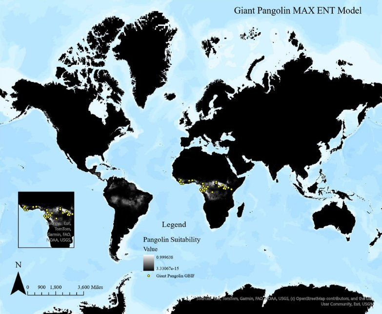
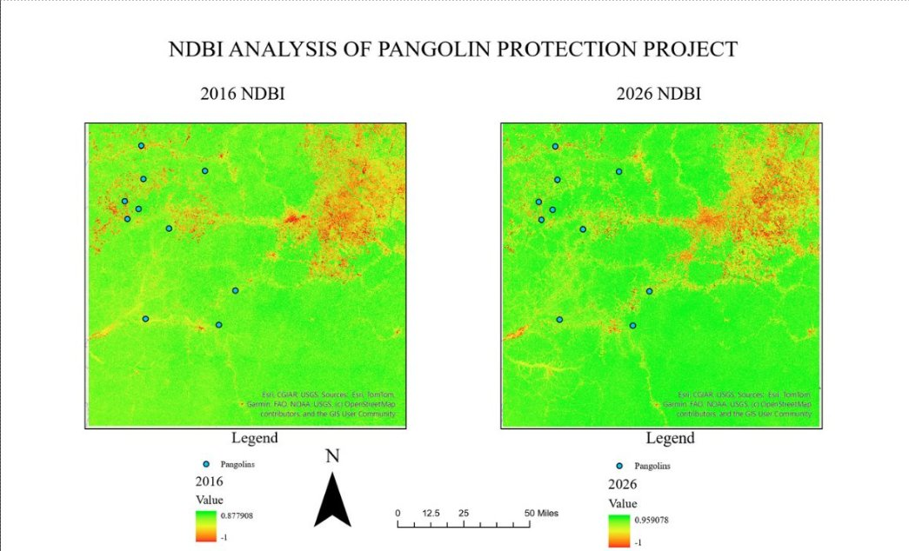
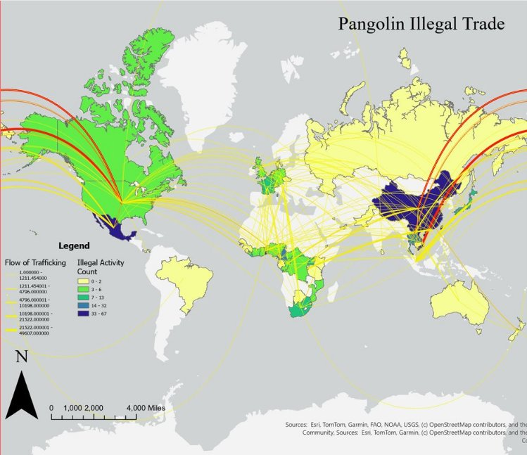
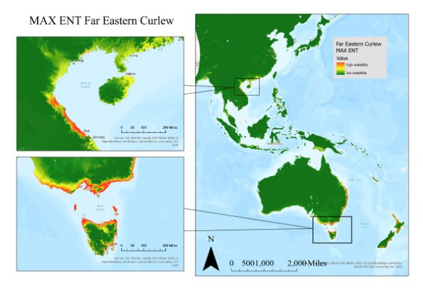
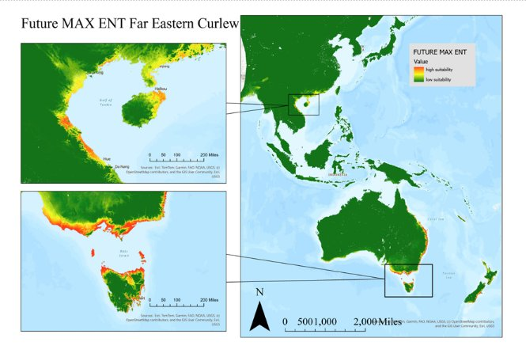
Satellite-based analysis of deforestation, fire burn severity, refugee camp expansion, and land cover classification.
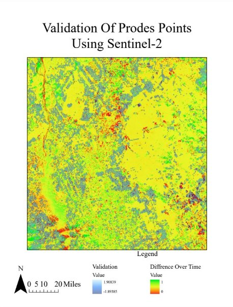
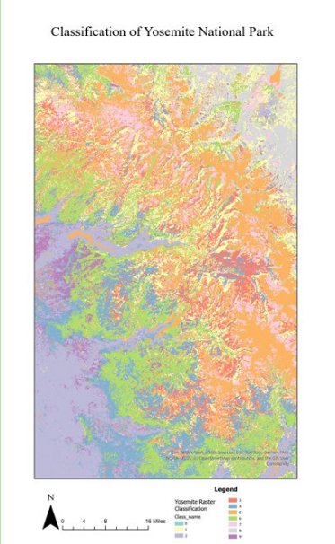
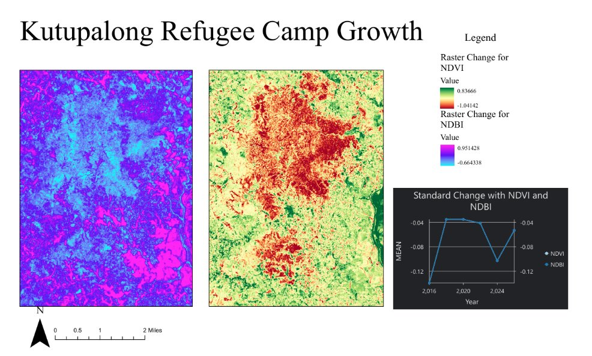
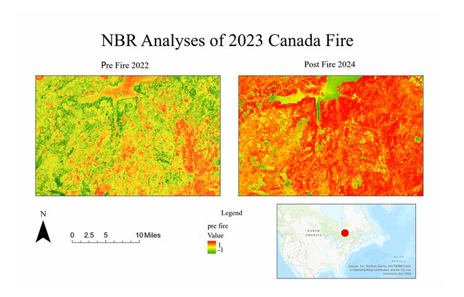
Water quality, air pollution, endangered species sightings, and environmental equity across California.
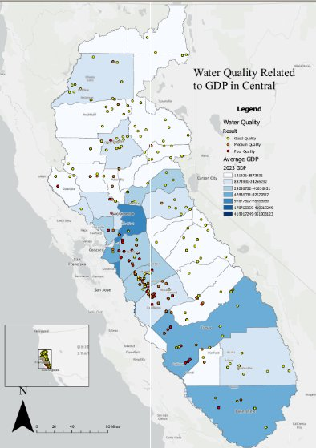
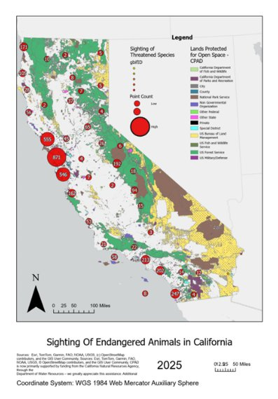
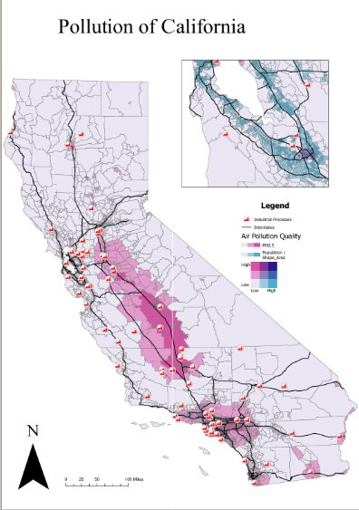
GIS and remote sensing student at Cal Poly San Luis Obispo with a focus on conservation biology and environmental change detection.
My work spans species distribution modeling, SAR-based deforestation detection, land cover classification, and social geography — from pangolin trafficking routes to soccer accessibility in Los Angeles.
Currently exploring NISAR SAR data pipelines, MaxEnt future climate projections, and satellite-based urban growth monitoring.
Social & Sports Geography
Spatial analysis of soccer development, FIFA rankings, crime patterns, and socioeconomic accessibility.
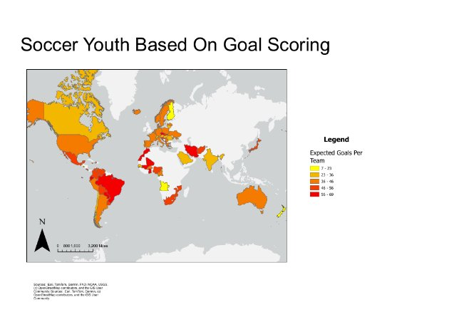
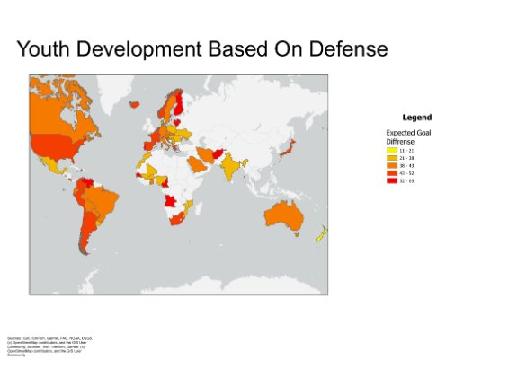
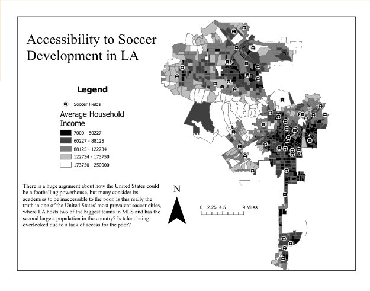
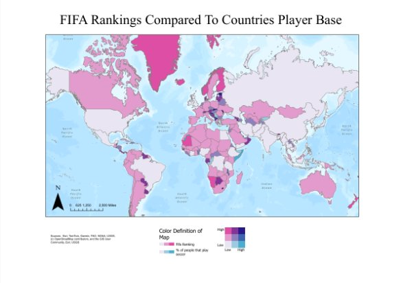
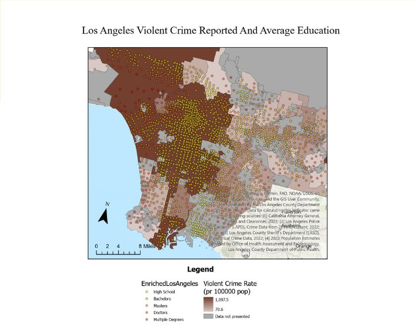